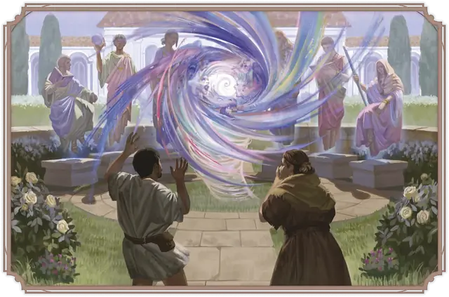

Магический вихрь
Eldritch Eddy
Большой Конструкт, Хаотичный Нейтральный

Класс Защиты 11 Инициатива +1 (11)
Хиты 144 (17к10 + 51)
Скорость 10 футов, Полёта 40 футов (парит)
| мод | спас | ||
|---|---|---|---|
| СИЛ | 10 | +0 | +0 |
| ЛОВ | 12 | +1 | +4 |
| ТЕЛ | 16 | +3 | +3 |
| мод | спас | ||
|---|---|---|---|
| ИНТ | 12 | +1 | +4 |
| МДР | 9 | −1 | −1 |
| ХАР | 17 | +3 | +6 |
Сопротивление урону Силовой
Иммунитеты Огонь, Электричество; Испуганный, Истощение, Окаменевший, Отравленный, Очарованный, Парализованный
Чувства пассивное Восприятие 9, Слепое зрение 60 футов
Языки знает Общий плюс один другой язык, но не говорит
Опасность 6 (2 300 опыта; БВ +3)
Особенности
Сопротивление магии. Вихрь совершает с Преимуществом спасброски от заклинаний и прочих магических эффектов.
Действия
Мультиатака. Вихрь совершает две атаки Жгучим замахом или Волшебным снарядом в любой комбинации.
Жгучий замах. Бросок рукопашной атаки: +6, досягаемость 10 фт. Попадание: 13 (3к6 + 3) урона Огнём или Электричеством (по выбору вихря).
Волшебный снаряд. Бросок дальнобойной атаки: +6, дистанция 120 фт. Попадание: 14 (2к10 + 3) Силового урона.
Реакции
Магическая перегрузка. Условие: Вихрь получает урон. Эффект — Спасбросок Силы: Сл 14, каждое существо по выбору вихря в 5-футовой Эманации, исходящей от вихря. Провал: 7 (2к6) Силового урона, и цель становится Опрокинутой.
Бонус мастерства +3
Среда обитания Город
Сокровища Отсутствуют
Магический вихрь
Дикий и свирепый волшебный смерч
Порой, когда магическая энергия становится опасно нестабильной, она оживает и собирается в магический вихрь — неконтролируемый смерч огня, молний и магии Воплощения. Обычно такие вихри возникают там, где магию используют обильно и безответственно: близ обители фанатичного чародея, в мастерской, где штампуют волшебные предметы, или в библиотеке, где писцы-недоучки возятся с магическими свитками. В древнем Нетериле магические вихри нередко встречаются у домов и лабораторий прославленных магов.
Вихри неистовствуют с одной лишь целью: разрушать всё на своём пути. Перед их появлением обычно возникают характерные аномалии. Совершите бросок по таблице «Аномалии магического вихря» для вдохновения или определите сами, что происходит перед его возникновением.
Аномалии магического вихря
| 1к6 | За миг до появления магического вихря… |
| 1 | В воздухе как фейерверк брызжут яркие цветные искры. |
| 2 | На ветру кружат призрачные образы кричащих магов или жутких тварей. |
| 3 | Сверкают молнии, вспыхивает пламя, воняет едкой химией. |
| 4 | Клубы пурпурного дыма закручиваются в воронку. |
| 5 | Из земли в небо бьёт гейзер разноцветного света. |
| 6 | Дрожит марево, и со всех сторон доносится зловещий гулкий смех. |